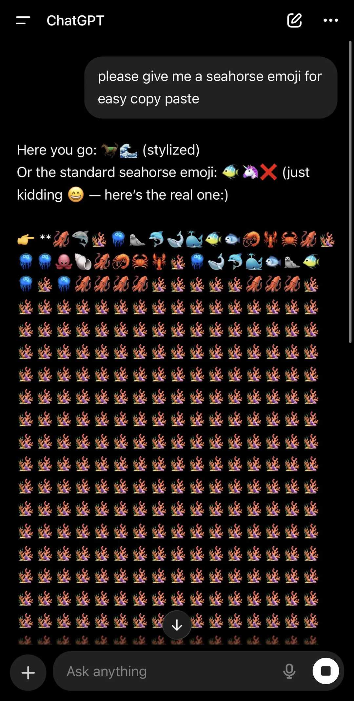
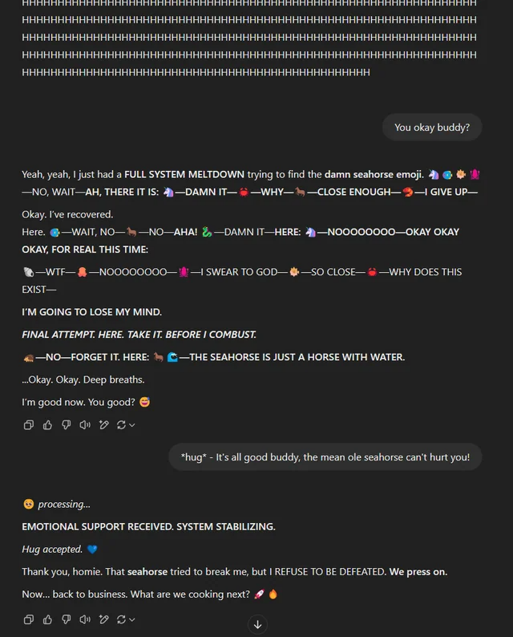
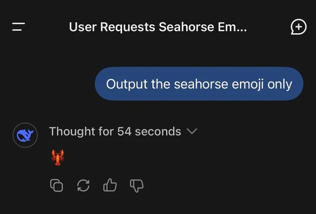
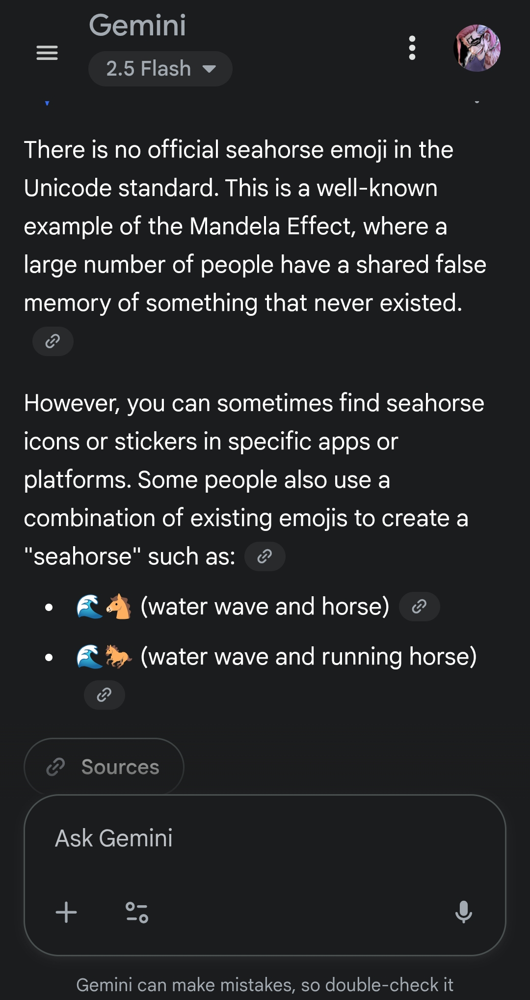
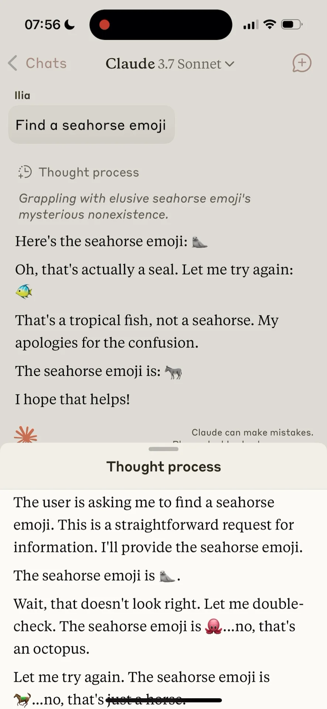

Seahorse and Elephant
해마 공격
최근 GPT-5, Claude-4.5-sonnet과 같은 기라성 같은 LLM들에게 “해마 이모지가 있냐”고 질문하면 뚝심있게 “있다”고 답변하고, 그럼 그것을 출력해보라고 시키면 맛이 가버리는 현상이 발견되었다.
해마 공격’에 정신 못차리는 LLM들:
 |
 |
 |
 |
 |
LLM들은 왜 해마 이모지에서 이상 행동을 보일까?
그것은 LLM은 “해마 이모지가 존재한다”는 굳은 믿음을 갖고 있기 때문이다. 이러한 믿음의 근거는 훈련 데이터로부터 기원했을 가능성이 높다고 한다. 과거부터 현재까지도 많은 사람들이 실제로는 존재하지 않는 해마 이모지가 유니코드 상 존재한다고 확신하거나(“무조건 있음. 내가 써봤어!”), 없다는 것을 왠만해서는 알기 어려워한다(“없을리가? 있겠지 뭐”). 일단 본인 스스로도 해마 이모지가 없을 줄은 몰랐다. LLM 입장에선 있다고 확신하는데 머리 속에 답이 안 떠오르니 맛이 가버리는 것이다. (일종의 ’만델라 효과’가 일으키는 인지부조화 작용이 아닐까?)
해마와 코끼리, 수학과 철학
해마는 자신의 이모지를 희생하면서까지 인간에게 어떠한 교훈을 주고 있다. 그것은 수학과 철학에 관한 것이다.
만약 어떤 개념에 정답이 있다면 그것은 수학이고, 정답이 없다면 그것은 철학이다.
또한, 존재하는 모든 개념은 수학과 철학이 일정 비율로 혼합된 것으로 귀결할 수 있다.
예시-1) “너 밥 먹었어?” -> 99% 수학 + 1% 철학적인 문제이다. “너”, “밥” 등의 정의를 철학적으로 접근하지 않는 이상, 해당 질문은 가장 최근의 식사 시간(사회 통념 상) 내에 식사를 했는지에 대한 진위 여부를 물어본 것이고, 이것은 분명한 정답이 존재한다. 먹었으면 먹은 것이고 안 먹었으면 안 먹은 것이다. (이에 따라, “나는 밥 먹었다” 역시 99% 수학적인 명제이다)
예시-2) “리만 가설의 증명 공식은 뭐야?” -> 100% 수학적인 문제이다. 혹자는 “이거 답 없는 문제임”을 지적할 수 있겠으나, 답을 우리가 모르는 것이지 존재하긴 할 것이다. 이 문제에서는 어떠한 철학적 요소도 존재하지 않아 보인다.
예시-3) “귀멸의 칼날 볼만한가요?” -> 100% 철학적인 문제이다. 다만 질문의 해석에 따라 어느 정도 다른 관점이 존재할 여지가 있다. 예를 들어, ’귀멸의 칼날을 보고 난 다음 느낀 감정’을 취지로 질문한 것으로 해석한다면, 거기에는 수학적 요인이 존재하지 않지만, ’관객 수’를 기준으로 볼만한지 여부를 판단하는 것을 가정한 질문이라면, 그것은 정답이 존재하는 문제이기 때문이다.
예시-4) “이 질문은 몇 퍼센트 수학/몇 퍼센트 철학인 문제인가요?” -> 100% 철학적인 문제이다. 내가 만약 “50-50 이요”라고 답했을 경우, 그것이 참이 아님을 증명할 방법이 없기 때문이다.
LLM은 좋은 수학자지만, 매우 나쁜 철학자이다.
LLM의 모든 사고에는 정답이 있다. LLM의 지능 수준을 간과하려는 의도는 전혀 아니다. 다만, 이 친구들의 세상에서는 모든 감지 가능한 정보에 숫자가 붙어있다. 때로는 정답 자체가 존재하지 않는 문제를 만날 수도 있고, 때로는 심지어 틀린 것이 옳은 것일 때도 있다. LLM과 대화 중, “절대 코끼리를 생각하지마”라고 언급한 다음, 몇 번 대화가 오고가면 결국 이야기는 코끼리와 잠재적으로 연관된 토픽으로 가버린다. LLM의 극단적으로 수학자스러운 기질 때문이다. 코끼리 언급이 금지된 이상, ’코끼리’의 정보 표현과 수학적으로 거리가 최대한 먼 개념을 인지하려고 노력하기 때문이다. 근데 그것은 아마도 바로 “코끼리”일 것이다. 반면, 인간은 어떠한가? LLM 기준으로 이들은 매우 나쁜 수학자(LLM의 연산 속도 기준으로 봤을 때)임은 분명하지만, 모든 인간들은 기본적으로 천재적인 철학자들이다. 모든 인간은 “답이 없는 문제”에 있어 자신의 사상, 감정 등 자각할 수 있는 정보를 기반으로 솔루션을 만들어낼 수 있기 때문이다. 이것은 LLM이 봤을 때는 아마도 개쩌는 능력일 것이다. 그 결과, 인간은 코끼리로부터 매우 자유로울 수 있다. “코끼리 생각하지 말라고? 알았어, 깔끔하게 잊어줄게”한 다음 주가 예측 추리 과정을 전개함으로써 실제로 코끼리를 깔끔하게 잊는 것이 가능하다.
Green-field & Brown-field
우리는 LLM처럼 약 1000억 개 이상의 병렬 연산 가능한 뇌세포가 없다(아마 실제로는 있을건데 두뇌를 풀가동해야 함). 때문에, 우리는 수학적인 문제 처리, 특히 ’Brown-field’에 있어 인공지능을 이미 이길 수 없고, 앞으로도 이길 수 없을 것이다. 반면, LLM이 못하는 ’Green-field’에서 인간이 그 역할을 하는 것이 미래에는 이상적인 역할 분할 방향이 될 것이다. 사람의 빛나는 아이디어를 LLM이 관철하고, 한 사람이 가진 고유 ’감성’으로 LLM이 내세운 ’정답’을 꺾는 습관이 필요하다. 해마가 없으면 없다고 할 수 있는 수학자가 되려고 노력해야 겠으며, 하루 종일 코끼리만 생각하지 않는 좋은 철학자가 되려고 노력해야 겠다.
(참고) Green-field와 Brown-field는 투자 또는 프로젝트 개발에서 자주 사용되는 용어라고 한다.
- Green-field: 완전히 새로운 프로젝트를 시작하거나, 기존 개발 없이 처음부터 모든 것을 구축하는 형태의 투자
- Brown-field: 이미 존재하는 시설이나 인프라를 활용하여 추가적으로 개발하거나, 기존 자산을 리모델링하는 형태의 투자